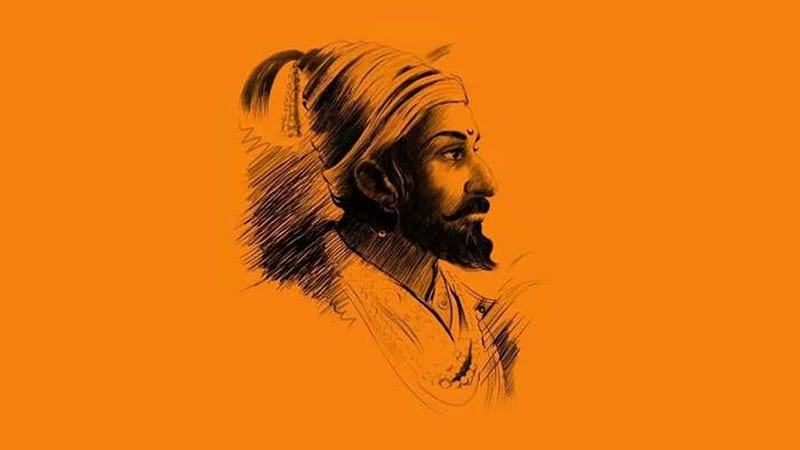
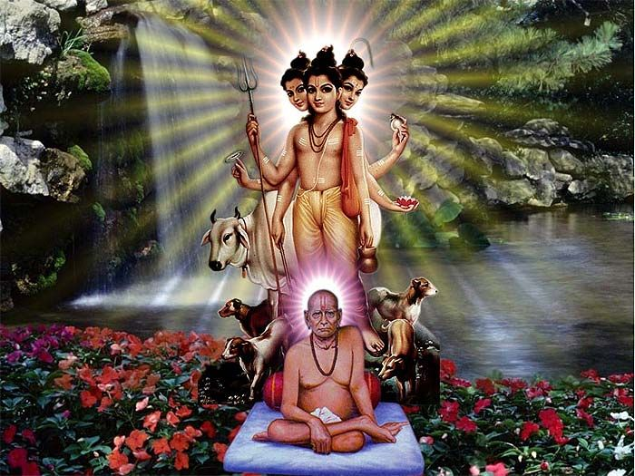
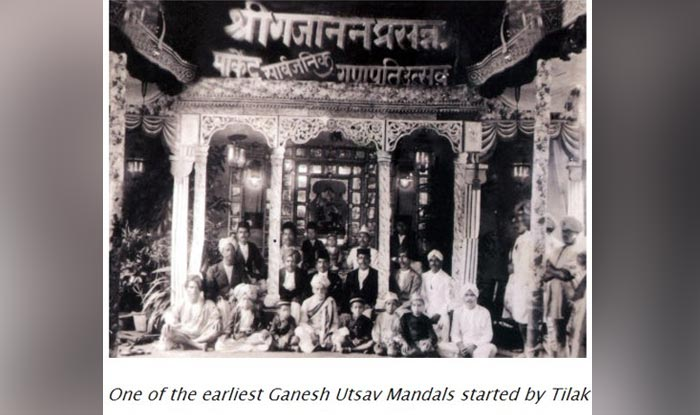

सोमवार, १४ सप्टेंबर २०२६ · मध्यरात्री Monday, 14 September 2026 · Midnight

२००३ मध्ये स्थापनेपासून, श्री स्वामी समर्थ मित्र मंडळ भक्ती, एकता आणि सांस्कृतिक मूल्यांचे संवर्धन करण्यासाठी समर्पित आहे. सुम्ब्रेनगर, वाकी खुर्द, पुणे येथे स्थित, आमचे मंडळ प्रेम व उत्साहाने भक्त व स्वयंसेवकांना एकत्र आणते.
वर्षभरात, आम्ही गणेश उत्सव, नवरात्र उत्सव, शिवजयंती उत्सव, दहीहंडी उत्सव, आरोग्य शिबिरे, रक्तदान शिबिरे, वृक्षारोपण मोहीम आणि अनेक उपक्रमांचे आयोजन करतो जे एकात्मतेची आणि सेवाभावी वृत्तीची प्रेरणा देतात.
Founded in 2003, Shree Swami Samarth Mitra Mandal is dedicated to promoting Hindu devotion, unity, and cultural values through vibrant celebrations and various community initiatives. Located in Sumbrenagar, Waki Khurd, Pune, our Mandal brings together devotees and volunteers with love and enthusiasm.
Throughout the year, we organize Ganesh Utsav, Navratri Utsav, Shivjayanti Utsav, Dahihandi Utsav, health camps, blood donation drives, tree plantation drives, and many other activities that inspire the spirit of togetherness and service.

छत्रपती शिवाजी महाराज हे महान मराठा योद्धा राजा केवळ त्यांच्या पराक्रमासाठीच नव्हे तर हिंदू धर्म व संस्कृतीवरील त्यांच्या गाढ भक्तीसाठी ओळखले जातात. गणेश उत्सवाचे सार्वजनिक स्वरूप लोकमान्य टिळकांनी पुढे नेले असले तरी, शिवाजी महाराजांनी श्री गणेशावर प्रचंड श्रद्धा ठेवली होती व प्रत्येक मोहिमेपूर्वी गणपती बाप्पांचे आशीर्वाद घेत असत. मराठी जनतेसाठी गणपती बाप्पा हे शौर्य, बुद्धिमत्ता आणि संकटांवर मात करण्याचे प्रतीक आहेत — जे शिवाजी महाराजांच्या जीवनाचे व त्यांच्या वारशाचे सजीव चित्रण करतात. गणेशभक्ती आणि शिवाजी महाराजांचा शौर्यभावना आपल्याला समाज व मातृभूमीप्रती निष्ठा, एकता व धैर्य यांचे प्रेरणादायी धडे देतात.
Chhatrapati Shivaji Maharaj, the great Maratha warrior king, is revered not only for his valor and strategic brilliance but also for his deep devotion to Hindu dharma and culture. Though the public celebration of Ganesh Utsav was popularized later by Lokmanya Tilak, it is said that Shivaji Maharaj held immense faith in Lord Ganesh and would seek Ganpati Bappa's blessings before important battles and missions. For Maharashtrians, Ganpati Bappa symbolizes courage, wisdom, and the power to overcome obstacles — qualities that perfectly reflect Shivaji Maharaj's life and legacy. Together, the devotion to Ganesh and the spirit of Shivaji Maharaj inspire us to uphold bravery, unity, and unwavering dedication to society and the motherland.

अक्कलकोटचे श्री स्वामी समर्थ महाराज हे दिव्य अवतार आणि महान सद्गुरू म्हणून ओळखले जातात. त्यांनी असंख्य भक्तांना शांती, श्रद्धा व आत्मजागृतीकडे नेले. त्यांच्या शिकवणीत भक्ती, दया आणि निःस्वार्थ सेवेचे महत्त्व आहे.
या गोंधळाच्या जगात आध्यात्मिक प्रगतीसाठी आणि जीवनातील खरी दिशा मिळवण्यासाठी एक खरा गुरु असणे आवश्यक आहे. गुरुच आपल्याला योग्य मार्ग दाखवतात, आपली आत्मा उन्नत करतात, अडथळे दूर करतात व अंतिम सत्याची जाणीव करून देतात. स्वामी समर्थ महाराज आपल्याला भक्ती, धर्मनिष्ठा आणि नम्रतेने जीवन जगण्याची प्रेरणा देतात व त्यांच्या कृपेने सर्व संकटांवर मात करून परिपूर्णता प्राप्त करता येते याचा संदेश देतात.
Swami Samarth Maharaj of Akkalkot is revered as a divine incarnation and a supreme spiritual master who guided countless devotees towards peace, faith, and inner awakening. His teachings transcend all boundaries and emphasize the power of devotion, compassion, and selfless service.
In this world full of distractions and challenges, the presence of a true Guru is essential to attain spiritual growth and find purpose. A Guru not only shows the right path but also uplifts our soul, removes obstacles from our lives, and helps us realize the ultimate truth. Swami Samarth Maharaj inspires us to lead a life filled with devotion, righteousness, and humility, reminding us that with the blessings of a Guru, one can overcome every difficulty and attain true fulfillment.

भारतीय स्वातंत्र्य सेनानी लोकमान्य बाळ गंगाधर टिळक यांनी १८९२ च्या ब्रिटिशांच्या सार्वजनिक सभा बंदी कायद्याच्या विरोधात गणेश उत्सवाचा सार्वजनिक प्रचार केला. टिळकांनी पुणे व गिरगाव, मुंबई येथे हा उत्सव सुरु केला.
गणपती बाप्पा हे विघ्नहर्ता व बुद्धीचे दैवत म्हणून पूजले जातात. उत्सवात भव्य मूर्तीची स्थापना, आरत्या आणि सांस्कृतिक कार्यक्रम सर्व वयोगटांमध्ये भक्तीभाव व आनंद पसरवतात. हा उत्सव एकता, भक्ती आणि सामाजिक कल्याणाचे प्रतीक आहे.
आज गणेश उत्सव हा केवळ धार्मिक नाही, तर सामाजिक ऐक्य व सांस्कृतिक अभिमानाचे प्रतीक बनला आहे आणि महाराष्ट्रातील सर्वात आवडता आणि मोठ्या प्रमाणावर साजरा केला जाणारा उत्सव बनला आहे.
Indian freedom fighter Lokmanya Bal Gangadhar Tilak championed Ganesh Utsav as a means to circumvent the colonial British government ban on Hindu gatherings through its anti-public assembly legislation in 1892. Lokmanya Tilak started the festival in Pune and Girgaon, Mumbai.
Lord Ganesha is worshipped as the remover of obstacles and the god of wisdom. During Ganesh Utsav, beautifully crafted idols are installed in pandals, daily aartis are performed, and cultural activities engage all age groups. The festival promotes unity, devotion, and social welfare.
Today, Ganesh Utsav symbolizes not only spiritual devotion but also social harmony and cultural pride, making it one of the most celebrated and beloved festivals in Maharashtra.